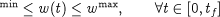

We may also have certain constraints that must be satisfied at all times during the system operation. If these path constraints are equalities, then often they can simply be added to the system model effectively converting one of the control variables u(t) into an algebraic variable y. More often, they are inequalities of the form:

For instance, in our batch reactor example, we may require that the temperature never exceed a certain value so as to avoid some unwanted side-reactions that are not explicitly considered by our model.
Although we have assumed in equations representing end-point, interior-point and path constraints that the various constraints are imposed on a single variable w, this is not really restrictive. If we wanted to constrain a function of several variables, we could simply define a new variable w through an additional equation:
and then impose the required constraints on w.